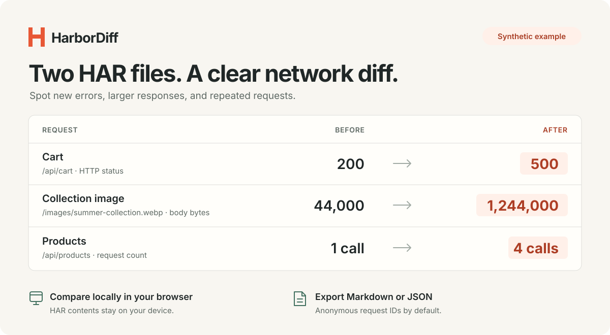

A REPRODUCIBLE WALKTHROUGH
How to compare
two HAR files.
A new error, a much larger image, and three extra API calls. Here is how to find them, understand the limits of the evidence, and share a useful report.

01 / CAPTURE
Record the same flow before and after.
A HAR (HTTP Archive) is a JSON record of network requests and responses. It can include URLs, timing and size measurements, headers, and content. For a useful comparison, record a specific journey—for example, opening the storefront and adding one item to a cart—under comparable conditions.
- Open your browser's Network panel before starting the flow. Clear earlier requests so the capture has a deliberate scope.
- Record the baseline and export it as HAR. Repeat the same actions after the change and export a second file.
- Keep cache behavior, device, network throttling, and capture scope comparable. Use Chrome’s Preserve log or Firefox’s Persist Logs only when you need requests across navigations, and use it consistently.
- Load the files into Before and After, then select Compare captures.
Chrome: clear text and resource-type filters before exporting the full flow, then use Export HAR (sanitized) in the Network toolbar. Filters can limit which requests are exported. Firefox: choose Save All as HAR from the Network Monitor toolbar menu or request list context menu.
For browser-specific controls, see Chrome's HAR export documentation and Firefox's Network Monitor toolbar documentation.
02 / INSPECT
Start with individual request groups.
The demo contains 9 requests before and 12 after. HarborDiff groups repeated requests by HTTP method and normalized URL. Its first three finding cards highlight the cart, image, and search requests. Select More calls to inspect the products endpoint.
| Group | Before | After | What to inspect |
|---|---|---|---|
Cart R002 | HTTP 200 140 ms | HTTP 500 820 ms | A new HTTP error and 680 ms longer duration. The error response is smaller, which does not make it a better result. |
Image R008 | 44,000 bytes | 1,244,000 bytes | 1,200,000 more response-body bytes. The app rounds this difference to 1.1 MiB. Check which image was served and its encoding. |
Products R003 | 1 call 8,500 bytes | 4 calls 34,000 bytes | Each response is still 8,500 bytes. The extra recorded calls account for the larger group total. |
Search R005 | 180 ms HTTP 200 | 1,260 ms HTTP 200 | A 1,080 ms increase despite successful status codes. Repeat the capture before inferring a persistent slowdown. |
Click a request to see its counts, known measurements, and observed status codes in both captures. A finding is a place to investigate; its position in the list is not proof that it caused a user's problem.
Unflagged does not mean unchanged. The stylesheet becomes smaller and faster in this demo. The products group's median rises only 6.5 ms, below the default 100 ms threshold, even though its call count increases.
03 / CHECK THE EVIDENCE
Unknown measurements are not zeros.
The after capture intentionally lacks a valid body size and duration for /api/reviews. Coverage is therefore 11 of 12 after responses, compared with 9 of 9 before.
- Body bytes use HAR
response.bodySize. They exclude header overhead and are distinct from decoded content size. - Duration uses HAR request time and the median within a group. It is not page-load time, interaction latency, or a Core Web Vital.
- HTTP errors cover statuses 400–599. Missing or zero statuses remain unknown; this version does not classify browser or network failures.
Cache state, traffic, device load, and different actions can change what you record. One before/after pair shows observations, not statistical significance or root cause.
04 / SHARE
Put a small report in the issue.
Select Copy summary, Markdown, or JSON. The report contains the full comparison; the table's current filter does not restrict the export.
Default reports use request IDs such as R002, omit URLs and input filenames, and exclude request headers, cookies, and payloads. These reports still contain measurements and status counts, so review the information you intend to share.
If you enable Include URL paths in exports, query values are redacted, but hostnames, paths, and query parameter names can still be sensitive. Chrome’s sanitized export removes certain sensitive information, including authentication and cookie headers, but it is not a promise to remove every sensitive URL or payload. Treat raw HAR files as private and inspect reports before sharing.
Use the same comparison from the command line
Node.js 20 or newer is required. There are no runtime dependencies.
git clone https://github.com/Wildchiken/harbor-diff.git
cd harbor-diff
node bin/harbor-diff.js examples/before.har examples/after.har
node bin/harbor-diff.js --demo --format json > report.jsonFor an explicit HTTP-error check, append --fail-on errors. Exit code 2 means the chosen flag occurred; it does not identify the cause.
When two captures need more care
- Cache-busting query values differ.
- Values participate in matching. Ignore a specific parameter in Matching & thresholds only if it is irrelevant to your comparison. Ignoring meaningful values can combine different requests.
- JavaScript filenames contain different hashes.
- Different filenames remain added and removed groups. HarborDiff does not infer that two hashed resources are versions of the same asset.
- The same URL handles multiple API operations.
- Requests with the same method and URL share a group even if their bodies differ. Payloads and GraphQL operations are not compared.
- The capture is large.
- The browser app accepts up to 25 MiB and 30,000 entries per capture. Record a smaller, comparable session instead of mixing unrelated browsing into the comparison.
Try the comparison on a known example.
Open the built-in demo, inspect the four groups above, and export a report. Then repeat the flow with your own captures.